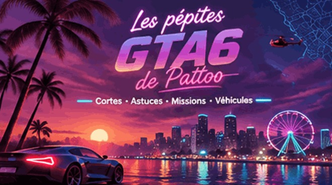

Documenté sur le WebFR · Ajout 25/11/2026
ViceExplore – Atlas de Leonida
Présentation et comparaison des six régions officielles, avec favoris. La carte géographique et les coordonnées précises sont encore en préparation.
Consulter la ressource ↗VICE CITY • LEONIDA • EXPLORATION
Une bibliothèque de découvertes pour profiter de Grand Theft Auto VI : cartes, commandes de manette, missions, véhicules et secrets. En français en priorité, enrichie au fil de nos recherches.

MISE À JOUR • 25 NOVEMBRE 2026
Les guides concernent uniquement les activités fictives de GTA VI. Attention : les liens vers les missions, véhicules et secrets peuvent révéler des éléments de l’histoire. Certaines ressources peuvent proposer des comptes, publicités ou options payantes.
Fiabilité : « Documenté sur le Web » signifie que la ressource a été repérée et son sujet confirmé dans les résultats ou sur la page, pas que ses astuces ont été testées en jeu. « Officiel » désigne l’éditeur. « À vérifier » indique un accès ou une affirmation non confirmé. Les cartes partagent parfois des données et les listes de Randy divergent : vérifiez dans votre partie. Les commandes dépendent du réglage de manette.
69 ressources affichées
Présentation et comparaison des six régions officielles, avec favoris. La carte géographique et les coordonnées précises sont encore en préparation.
Consulter la ressource ↗Carte interactive et checklist annoncées. Résultat de recherche identifié ; ouverture directe et fonctionnement de la carte à confirmer.
Consulter la ressource ↗Commerces, garages, planques et suivi de progression.
Consulter la ressource ↗Fond de carte du jeu, filtres et lieux accessibles.
Consulter la ressource ↗Carte et wiki des véhicules, personnages et lieux.
Consulter la ressource ↗Repères communautaires : positions parfois estimées.
Consulter la ressource ↗Commerces, activités et collectibles ; crédits des données disponibles.
Consulter la ressource ↗Carte communautaire enrichie depuis la sortie.
Consulter la ressource ↗Fond officiel, positions de certains repères approximatives.
Consulter la ressource ↗Carte avec filtres et guides.
Consulter la ressource ↗Repères de véhicules, commerces et planques.
Consulter la ressource ↗Présentation des régions sur le fond officiel.
Consulter la ressource ↗Carte, guides et suivi des découvertes.
Consulter la ressource ↗Carte de lieux et de secrets.
Consulter la ressource ↗Carte communautaire française avec suivi.
Consulter la ressource ↗Comparaison des outils cartographiques.
Consulter la ressource ↗Tutoriels sur les réglages, véhicules et mécaniques. Des contenus datent du 12 novembre 2026, avant la sortie : les manipulations restent à vérifier en jeu.
Consulter la ressource ↗Article du 20 novembre 2026 expliquant où retrouver la carte officielle et le guide IGN des deux premiers chapitres. Attention aux spoilers en consultant les soluces.
Consulter la ressource ↗Portail indépendant de fans : carte, outils pour joueurs et médiathèque de vidéos officielles. Résultat de recherche identifié ; ouverture directe et fonctions à confirmer.
Consulter la ressource ↗Actualités, soluce, fiches, carte et guides.
Consulter la ressource ↗Site francophone avec guide et forum.
Consulter la ressource ↗Guides de gameplay, argent et personnages.
Consulter la ressource ↗Présentation du site de fans et de ses fiches.
Consulter la ressource ↗Guides pratiques et premiers pas.
Consulter la ressource ↗Actualités, véhicules et soluce.
Consulter la ressource ↗Wiki, cartes et suivi de progression.
Consulter la ressource ↗Articles et solutions en français.
Consulter la ressource ↗Média et communauté francophones.
Consulter la ressource ↗Guides de navigation, progression et premiers pas.
Consulter la ressource ↗Guides pratiques classés par thèmes.
Consulter la ressource ↗Soluces et fiches de missions.
Consulter la ressource ↗Tableaux de commandes des deux consoles.
Consulter la ressource ↗Commandes à pied, en voiture, en avion et autres situations.
Consulter la ressource ↗Commandes Xbox par défaut, menus et déplacements.
Consulter la ressource ↗Les différents réglages et raccourcis.
Consulter la ressource ↗Base de données, statistiques et catégories de véhicules.
Consulter la ressource ↗Chapitre 3 : modèles recherchés et lieux.
Consulter la ressource ↗Chapitre 3 : liste et récompenses annoncées.
Consulter la ressource ↗Comparaison des emplacements et des listes.
Consulter la ressource ↗Guides des activités de Moses, Randy et Wyman.
Consulter la ressource ↗Guide alternatif de la liste ; chiffres à recouper.
Consulter la ressource ↗Missions dans l’ordre et suivi par chapitre.
Consulter la ressource ↗Soluces par chapitre et activités secondaires.
Consulter la ressource ↗EN • Missions principales, optionnelles et secondaires.
Consulter la ressource ↗Guides et infographies sur les mécaniques.
Consulter la ressource ↗Activités rémunératrices du mode histoire.
Consulter la ressource ↗Progression économique et activités du jeu.
Consulter la ressource ↗Guide des cambriolages fictifs, chapitre 3.
Consulter la ressource ↗Guide des missions de bijouteries en jeu.
Consulter la ressource ↗Activités fictives et progression par chapitre.
Consulter la ressource ↗Mystères avec statuts de confirmation.
Consulter la ressource ↗Références et clins d’œil cachés.
Consulter la ressource ↗Découvertes et lieux insolites.
Consulter la ressource ↗Secrets et méthode de vérification annoncée.
Consulter la ressource ↗Clins d’œil et lieux signalés par la communauté.
Consulter la ressource ↗Références et mystères du jeu.
Consulter la ressource ↗Tableau des secrets et sources.
Consulter la ressource ↗Discussions francophones autour du jeu.
Consulter la ressource ↗Entraide et échanges entre joueurs.
Consulter la ressource ↗Forum, actualités et wiki.
Consulter la ressource ↗Fansite, communauté et encyclopédie.
Consulter la ressource ↗Communiqué du 19 novembre 2026 : lancement et informations sur la carte officielle imprimable de Leonida.
Consulter la ressource ↗EN • Site de l’éditeur, vidéos et informations officielles.
Consulter la ressource ↗EN • Guides des systèmes et conseils.
Consulter la ressource ↗EN • Guides, astuces et solutions.
Consulter la ressource ↗EN • Guide recommandé par Rockstar ; accès direct non confirmé lors du contrôle.
Consulter la ressource ↗Présentation officielle publiée le 27 août 2026, réalisée à partir de séquences de jeu sur PS5. Ce n’est pas une solution de mission.
Consulter la ressource ↗EN • Présentation vidéo du gameplay.
Consulter la ressource ↗EN • Tutoriel vidéo communautaire sur les voitures de Randy. Vidéo non visionnée intégralement.
Consulter la ressource ↗Un espace pour nos propres découvertes et les manipulations réellement testées en jeu. Aucune astuce personnelle n’est encore publiée ici.